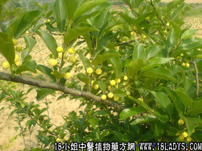

穿破石(中药材植物名:畏芝)(植物科目:桑科)

别名：牵牛入石。
植物名：畏芝。
生长环境：本品为直立扳援状灌木，山地或树林中常见扳援其他树木上，在山沟、小溪的岩石丛肿也有生长。
分布：广东中部和南部，北部都有生长。此外热带亚洲、澳洲、东非洲亦有。
入药部分：根部。
采集期：全年。
采购地点：从药材公司购入。
性味：性微凉、味淡。
功能：祛风、活血散瘀、舒筋活络、去湿火。
主治、用量和用法：1、苦上肺痨，配伍用；2、湿火腰痛：干根1至2两，清水煎服；3、酒湿脚痛：干根2两、花生仁1两，清水煎服；4、四肢酸痛：干根2两，加鸡脚煎服；5、跌打，配伍用。
验方：（治跌打积瘀肿痛方）穿破石1两、千大锤5钱、入地金牛根5钱、五爪龙5钱、韩信草5钱、血见愁5钱、清水四碗，煎成一碗服。
（方解）凡跌扑伤，易患积瘀、肿痛。本方以穿破石通络，千大锤祛风行气，五爪龙活血消肿，入地金牛止痛，韩信草去瘀生新。络通，瘀去；肿消，痛止，其病自除。
（方歌）跌打破石可无忧，千大锤与入地牛，五爪龙与韩信草，散瘀还加血见愁。
参考资料：《临床实用中药》本品与铁色金等药配合为“铁破汤”，治肺结核咯血有效。